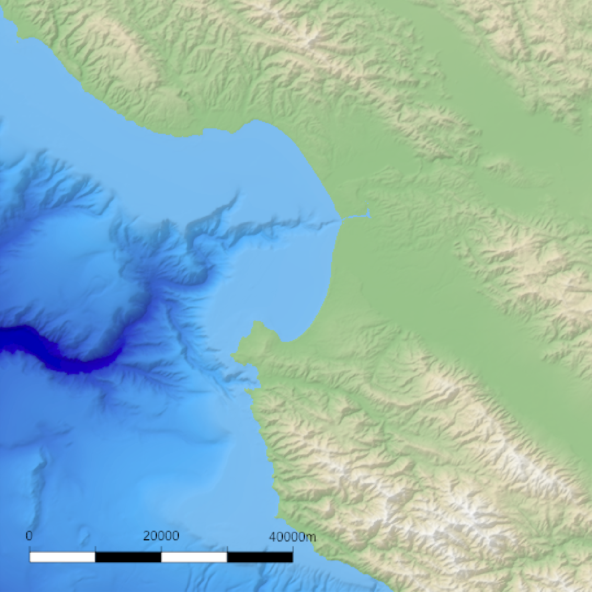
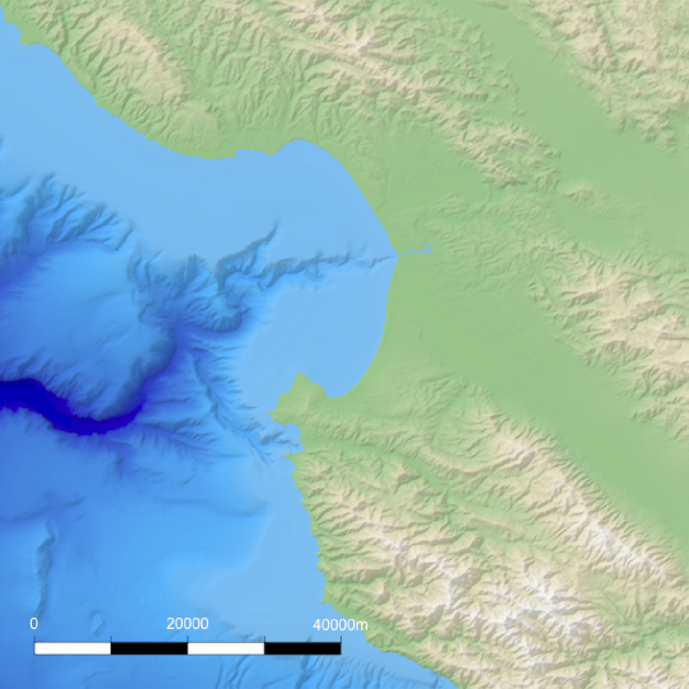
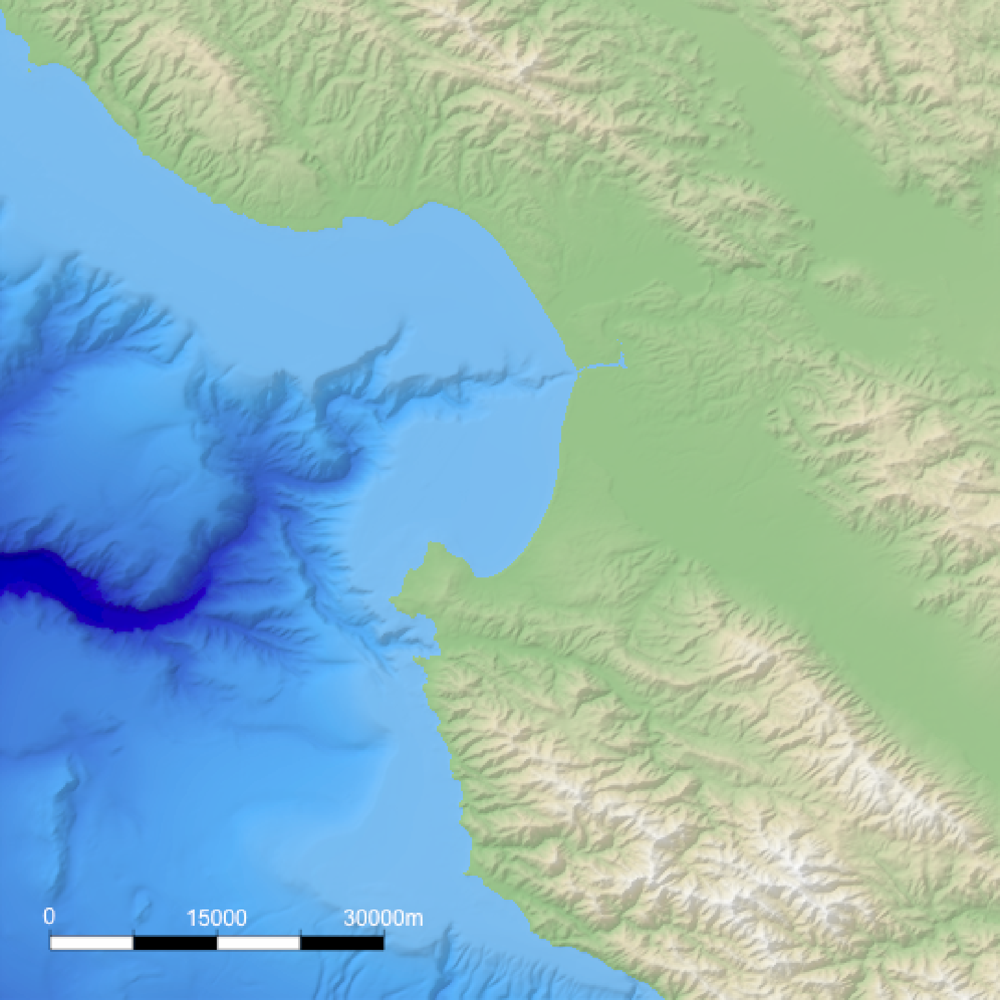
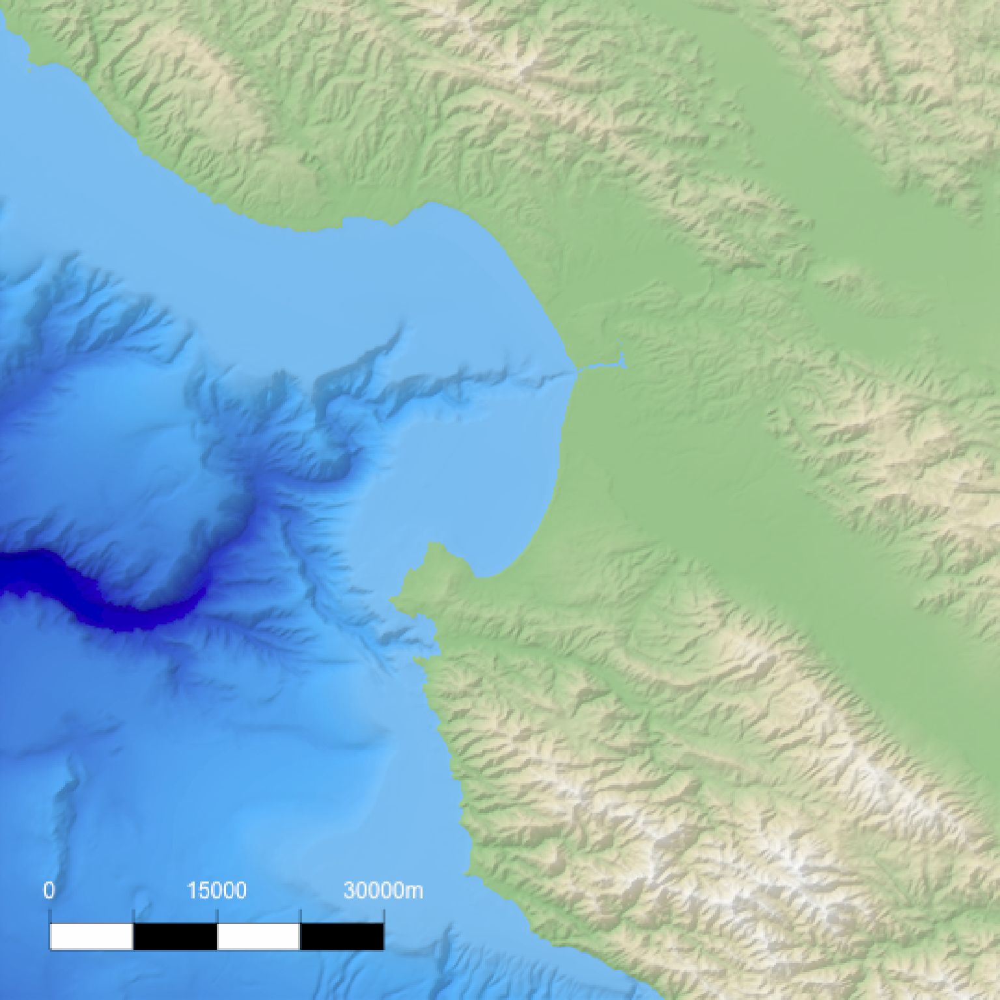
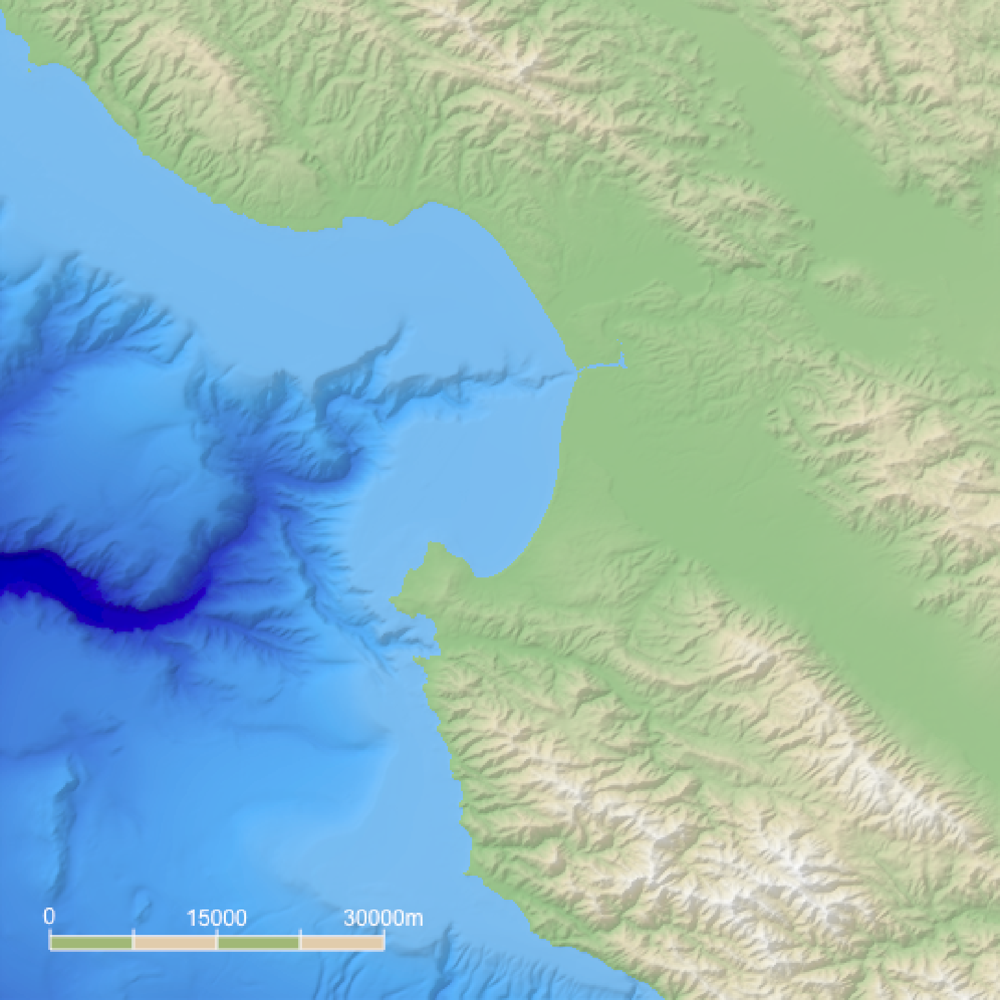

This function creates an overlay with a scale bar of a user-specified length. It uses the coordinates of the map (specified by passing an extent) and then creates a scale bar at a specified x/y proportion across the map. If the map is not projected (i.e. is in lat/long coordinates) this function will use the `geosphere` package to create a scale bar of the proper length.
generate_scalebar_overlay(
extent,
length,
x = 0.05,
y = 0.05,
latlong = FALSE,
thickness = NA,
bearing = 90,
unit = "m",
flip_ticks = FALSE,
labels = NA,
text_size = 1,
decimals = 0,
text_offset = 1,
adj = 0.5,
heightmap = NULL,
width = NA,
height = NA,
color1 = "white",
color2 = "black",
text_color = "black",
font = 1,
border_color = "black",
tick_color = "black",
border_width = 1,
tick_width = 1,
halo_color = NA,
halo_expand = 1,
halo_alpha = 1,
halo_offset = c(0, 0),
halo_blur = 1
)A `raster::Extent` object with the bounding box for the height map used to generate the original map. If this is in lat/long coordinates, be sure to set `latlong = TRUE`.
The length of the scale bar, in `units`. This should match the units used on the map, unless `extent` uses lat/long coordinates. In that case, the distance should be in meters.
Default `0.05`. The x-coordinate of the bottom-left corner of the scale bar, as a proportion of the full map width.
Default `0.05`. The y-coordinate of the bottom-left corner of the scale bar, as a proportion of the full map height.
Default `FALSE`. Set to `TRUE` if the map is in lat/long coordinates to get an accurate scale bar (using distance calculated with the `geosphere` package).
Default `NA`, automatically computed as 1/20th the length of the scale bar. Width of the scale bar.
Default `90`, horizontal. Direction (measured from north) of the scale bar.
Default `m`. Displayed unit on the scale bar.
Default `FALSE`. Whether to flip the ticks to the other side of the scale bar.
Default `NA`. Manually specify the three labels with a length-3 character vector. Use this if you want display units other than meters.
Default `1`. Text size.
Default `0`. Number of decimal places for scale bar labels.
Default `1`. Amount of offset to apply to the text from the scale bar, as a multiple of `thickness`.
Default `0.5`, centered. Text justification. `0` is left-justified, and `1` is right-justified.
Default `NULL`. The original height map. Pass this in to extract the dimensions of the resulting RGB image array automatically.
Default `NA`. Width of the resulting image array. Default the same dimensions as height map.
Default `NA`. Width of the resulting image array. Default the same dimensions as height map.
Default `black`. Primary color of the scale bar.
Default `white`. Secondary color of the scale bar.
Default `black`. Text color.
Default `1`. An integer which specifies which font to use for text. If possible, device drivers arrange so that 1 corresponds to plain text (the default), 2 to bold face, 3 to italic and 4 to bold italic.
Default `black`. Border color of the scale bar.
Default `black`. Tick color of the scale bar.
Default `1`. Width of the scale bar border.
Default `1`. Width of the tick.
Default `NA`, no halo. If a color is specified, the text label will be surrounded by a halo of this color.
Default `1`. Number of pixels to expand the halo.
Default `1`. Transparency of the halo.
Default `c(0,0)`. Horizontal and vertical offset to apply to the halo, as a proportion of the full scene.
Default `1`. Amount of blur to apply to the halo. Values greater than `30` won't result in further blurring.
Semi-transparent overlay with a scale bar.
#Only run these examples if the `magick` package is installed.
if (length(find.package("magick", quiet = TRUE)) > 0) {
# \donttest{
#Create the water palette
water_palette = colorRampPalette(c("darkblue", "dodgerblue", "lightblue"))(200)
bathy_hs = height_shade(montereybay, texture = water_palette)
#Generate flat water heightmap
mbay = montereybay
mbay[mbay < 0] = 0
base_map = mbay %>%
height_shade() %>%
add_overlay(generate_altitude_overlay(bathy_hs, montereybay, 0, 0)) %>%
add_shadow(lamb_shade(montereybay,zscale=50),0.3)
#For convenience, the extent of the montereybay dataset is included as an attribute
mb_extent = attr(montereybay, "extent")
#Add a scalebar
base_map %>%
add_overlay(generate_scalebar_overlay(extent = mb_extent, length = 40000,
heightmap = montereybay,
latlong=TRUE)) %>%
plot_map()
#Change the text color
base_map %>%
add_overlay(generate_scalebar_overlay(extent = mb_extent, length = 40000,
text_color = "white",
heightmap = montereybay,
latlong=TRUE)) %>%
plot_map()
#Change the length
base_map %>%
add_overlay(generate_scalebar_overlay(extent = mb_extent, length = 30000,
text_color = "white",
heightmap = montereybay,
latlong=TRUE)) %>%
plot_map()
#Change the thickness (default is length/20)
base_map %>%
add_overlay(generate_scalebar_overlay(extent = mb_extent, length = 30000,
text_color = "white", thickness = 30000/10,
heightmap = montereybay,
latlong=TRUE)) %>%
plot_map()
#Change the text offset (given in multiples of thickness)
base_map %>%
add_overlay(generate_scalebar_overlay(extent = mb_extent, length = 30000,
text_color = "white", thickness = 30000/10,
text_offset = 0.75,
heightmap = montereybay,
latlong=TRUE)) %>%
plot_map()
#Change the primary and secondary colors, along with the border and tick color
base_map %>%
add_overlay(generate_scalebar_overlay(extent = mb_extent, length = 30000,
text_color = "white", border_color = "white",
tick_color = "white",
color1 = "darkolivegreen4", color2 = "burlywood3",
heightmap = montereybay,
latlong=TRUE)) %>%
plot_map()
#Add a halo
base_map %>%
add_overlay(generate_scalebar_overlay(extent = mb_extent, length = 40000,
halo_color = "white", halo_expand = 1,
heightmap = montereybay,
latlong=TRUE)) %>%
plot_map()
#Change the orientation, position, text alignment, and flip the ticks to the other side
base_map %>%
add_overlay(generate_scalebar_overlay(extent = mb_extent, length = 40000, x = 0.07,
bearing=0, adj = 0, flip_ticks = TRUE,
halo_color = "white", halo_expand = 1.5,
heightmap = montereybay,
latlong=TRUE)) %>%
plot_map()
#64373.8 meters in 40 miles
#Create custom labels, change font and text size, remove the border/ticks, and change the color
#Here, we specify a width and height to double the resolution of the image (for sharper text)
base_map %>%
add_overlay(generate_scalebar_overlay(extent = mb_extent, length = 64373.8, x = 0.07,
labels = c("0", "20", "40 miles"), thickness=2500,
text_size=3, font = 2, text_offset = 0,
text_color="white", color2="#bf323b", border_color=NA,
tick_color="red", tick_width=0,
bearing=0, adj = 0, flip_ticks = TRUE,
halo_color="black", halo_blur=3, halo_alpha=0.5,
width = ncol(montereybay)*2,
height = nrow(montereybay)*2,
latlong=TRUE), rescale_original=TRUE) %>%
plot_map()
# }
}




